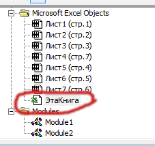

Авторесайз объединенных ячеек в EXCEL


Прежде чем перейти к сути, давайте на минуточку остановимся и осознаем всю степень сюрреализма, который творится в государственном документообороте. Подумайте над тем, что если вы отправляете государству какую-то распечанную EXCEL табличку на бумажке(потому что именно так требует закон), то на принимающей стороне есть ОТДЕЛЬНЫЙ, МАТЬ ЕГО, ЧЕЛОВЕК, который руками забивает эти данные куда-то себе в базу!
Осознали? Прекрасно. Продолжаем.
Так уж исторически сложилось, что часто по работе люди встречаются со "стандартными" формами в EXCEL, которые нужно автоматически растягивать в зависимости от контента в ячейках.
Казалось бы, достаточно распространённая тема, по которой уйма информации в этих ваших интернетах. Но проводить по этому поводу ликбез мне уже приходилось несколько раз за последние пару месяцев. Так что, лучше записать это дерьмо, чтобы не повторять одно и то же. И потратить сэкономленное время на прокрастинацию более важные дела.
Формулируем задачу
Представим ситуацию, в которой есть какая-то программа, которая на основании данных в БД заполняет какой-то ГОСТ-овский EXCEL-темплейт данными, который в будущем кому-то отправляется и/или распечатывается. И в этой (уже абсурдной) ситуации совершенно никому не хочется тратить собственное время на растягивание ячеек вручную. И очень хочется как-то этот процесс автоматизировать.
Чо делать?
do a barrel roll
Ресайзить макросом, очевидно. Тут у нас два пути в зависимости от того, насколько над нами хотят поиздеваться окружающие:
Самый простой вариант
Это когда мы видим, что в документе напрочь отсутствуют объединённые ячейки, которые нужно ресайзить. А ресайзинг одиночных — EXCEL поддерживает нативно. Достаточно ругнуться на него вот такой командой:
Cells.EntireRow.AutoFit ' Растянуть ячейки в высоту по контенту
' Или
Cells.EntireColumn.AutoFit ' Растянуть ячейки в ширину по контенту
' Или, на конкретную ячейку
ОбъектЯчейки.EntireColumn/EntireRow.AutoFit
Вариант "как всегда"
Но если вы читаете это, то скорее всего, у вас возникли сложности посерьёзнее. Вероятно, у вас самый обычный документ, в котором огромное количество связанных ячеек.
Що робити в цій ситуації?
Можно, конечно, попробовать изобрести очередной велосипед. А можно воспользоваться готовым кодом, который честно спиз сохранил из интернетов ваш покорный слуга.
Автором кода числится некий The_Prist (Щербаков Дмитрий) с сайта excel-vba.ru. Идея кода в том, что скрипт сначала временно отключает объединение ячеек, ресайзит первую ячейку с текстом нативными методами экселя, а затем объединяет ячейки обратно.
Получается достаточно просто и лаконично. Я лишь от себя добавил в код небольшой фикс, чтобы учитывались паддинги и масштабирование не "съезжало" при большом количестве ячеек.
Репозиторий с кодом можно найти здесь.
Как этим пользоваться:
- Проверить, что у вас тип файла с поддержкой макросов (с "m" на конце)
- Залезть в Вид -> Макросы -> Ввести %randomName% -> Создать
- ПКМ по Modules -> Insert -> Module
- Скопировать содержимое файла RowHeightForContent.vb из репозитория в новый созданный модуль
- Вызвать RowColHeightForContent с нужными ячейками.
Но! Один вызов функции принимает в аргументы рейндж из одной связанной ячейки. Нельзя сразу выделить всю страницу и попытаться её отмасштабировать.
Итоговый код вызова будет примерно вот таким
' Две статичные ячейки
RowColHeightForContent ActiveWorkbook.Sheets(1).Range("S32")
RowColHeightForContent ActiveWorkbook.Sheets(1).Range("AV30")
Dim i As Integer
' Масштабирование строк в таблицах циклом
' На втором листе
i = 8
Do While Len(ActiveWorkbook.Sheets(2).Cells(i, 7).Value) > 0
RowColHeightForContent ActiveWorkbook.Sheets(2).Cells(i, 7) ' Седьмой столбец
RowColHeightForContent ActiveWorkbook.Sheets(2).Cells(i, 228) ' 228 столбец
'(или вложенным циклом от N до M столбца)
i = i + 1
Loop
' На третьем листе
i = 5
Do While Len(ActiveWorkbook.Sheets(3).Cells(i, 7).Value) > 0
RowColHeightForContent ActiveWorkbook.Sheets(3).Cells(i, 7)
i = i + 1
Loop
Когда делать?
По какому событию вызывать этот код? У нас не много вариантов:
- Если происходит заполнение темплейта через EXCEL-OLE API, то можно попробовать подвязаться на событие завершения сборки файла. (Тут нужно смотреть документацию вашего инструмента, который выгружает)
- Во всех остальных случаях — можно выполнять код по событию "Открытие файла" (Workbook_Open).
- Для этого, нужно открыть модуль "Эта книга": 
- Затем создать функцию Workbook_Open примерно вот так:
Private Sub Workbook_Open()
' Здесь код ресайза
End Sub
В которую положить болт код ресайза нужных вам ячеек в документе. При открытии файла у пользователя будет всплывать запрос на разрешение выполнения макроса. И если он согласится — выбранные программистом ячейки будут растянуты по размеру содержимого. Собсна, всё.
Послание читателю
Возможно, я недостаточно раскрыл тему. Так что, если у вас остались вопросы — гугл вам в помощь прошу нафлудить в комментариях.
Всех благ